Click a highlighted definition to read it here without losing your place. Follow section numbers alongside the original PDF.
Find lecture practice in this chapter (2)
Expand a practice panel for its example, Mermaid flow, and self-check.
Chapter cheat sheet
Main idea, definitions, and solving steps
The main idea: Let the shape of the data determine the shape of the OCaml program.
| Key term | Concise meaning |
|---|---|
| Pattern matching | Selects a case by a value’s constructor and binds its components. |
| let rec | Defines a function that can refer to itself recursively. |
| h :: t | Prepends one element h to list t; @ concatenates two lists. |
| Higher-order function | Takes a function as input or returns a function. |
| Fold | Replaces list constructors with a combining function and a base value. |
Rule to remember: fold_right f [a; b] z = f a (f b z); fold_left f z [a; b] = f (f z a) b.
Small example: List.fold_left (fun acc d -> 10 * acc + d) 0 [1; 2; 3] = 123.
How to solve problems:
- Write the input/output contract and empty case.
- Match the data constructors.
- Recurse on a smaller input and combine its answer.
- For an accumulator, state what it means; test order and boundaries.
Common trap: Fold direction changes parentheses and argument order. A tail-recursive helper needs an invariant, not just an extra parameter.
Read the chapter in the original PDF · Continue to the detailed sections
Syntax and code companion
Use the syntax reference to trace a symbol to its meaning and source.
Patterns and recursive cases · Lists, cons, and tuples · Functions and application
Line-by-line code · A recursive list function
Complete OCaml teaching example
let rec length xs =rec permits calls to length inside its body.
match xs withInspect the list constructor.
| [] -> 0No elements means length zero.
| _ :: tail ->Discard the unused head; bind the smaller tail.
1 + length tailCount the head and recurse. Pending addition makes this version non-tail-recursive.
Trace result: length [4;7;9] = 3; inferred type: 'a list -> int.
Before you begin
Read in the PDF: Chapter 2, pp. 33–96. Goal: use OCaml as a language for describing and processing program trees. Definitions: pattern matching, structural recursion, higher-order function.
2.1 OCaml Basics
OCaml programs compute with expressions. A binding let x = e1 in e2 evaluates e1, binds its result to x, and evaluates e2 in that scope. A later binding with the same name shadows the earlier one; it does not mutate it. This distinction becomes the central subject of Chapters 3 and 6.
Types describe which operations are appropriate. Integers and floating-point numbers have distinct operations. A tuple can combine components of different types; a list has one element type. A function type int -> int -> int describes a function returning another function, so add 3 can be passed around before its second argument is supplied.
let add x y = x + y
let add_three = add 3
let answer = add_three 4 (* 7 *)
type tree = Leaf | Node of int * tree * tree
let rec size = function
| Leaf -> 0
| Node (_, left, right) -> 1 + size left + size right
The datatype defines legal tree shapes. Pattern matching selects a constructor and names its components. In the Node case, left and right are structurally smaller trees, giving both a recursive program and the outline of its termination argument.

View Mermaid source
flowchart TD
accTitle: Read an OCaml expression through its type and data shape
accDescr: Determine what a value represents before choosing its operation or pattern.
A["What value does this expression produce?"] --> B{"Data shape"}
B -->|List| C["Match empty or head plus tail"]
B -->|Variant| D["Match its constructor and fields"]
B -->|Function| E["Read input and output types; apply an argument"]
C --> F["Every branch must return a compatible type"]
D --> F
E --> F
Read this carefully: :: adds one element to the front of a list; @ concatenates two lists. Thus 1 :: [2;3] is valid, while [1] :: [2;3] mixes a list element with integer elements. The corresponding valid concatenation is [1] @ [2;3].
Exceptions interrupt normal evaluation and can be handled with try ... with. References introduce mutable cells, but most of this chapter's exercises need only immutable values and recursion. See the OCaml workbench for the course environment and commands.
Step by step · Read OCaml expressions, types, and patterns
Use these small steps through OCaml values, types, and patterns before attempting the recursion exercises. Source: PDF pp. 34–70.
Values and their types
| Expression | Type / meaning | Common mistake |
|---|---|---|
3 + 4 |
int, result 7 |
Using integer + on floats |
3.0 +. 4.0 |
float, result 7.0 |
Expecting automatic int-to-float conversion |
if true then 3 else 4 |
int; both branches must have the same type |
Returning an int in one branch and a bool in the other |
(3, true) |
int * bool, a two-component tuple |
Confusing a tuple with a list |
[3; 4] |
int list, two elements of one type |
Writing [3, 4], which is a one-element list containing a tuple |
[] |
'a list, an empty list with an unconstrained element type |
Treating it as unit () |
() |
unit, the one value of this type |
Treating it as “no value at all” |
The top-level prompt's ;; tells the interactive reader to finish a phrase. Ordinary definitions in a .ml file generally do not need it. A single ; has a different job: it separates list elements inside brackets, or sequences expressions outside them.
Application, arrows, and scope
- Parenthesize application first.
f x + 1means(f x) + 1;f (x + 1)passes a different argument. - Group calls to the left.
add 2 3means(add 2) 3.let add x y = x + yabbreviateslet add = fun x -> fun y -> x + y. - Group type arrows to the right.
int -> int -> intmeansint -> (int -> int). After one argument, a function remains. - Keep tuple arguments distinct.
let add_pair (x,y) = x+yhas typeint * int -> int. Call it withadd_pair (2,3). - Track the binding region. In
let x = 2 in let x = x+3 in x, the inner right-hand side sees 2; the inner body sees 5. A binding is not an assignment.
For let id x = x, OCaml can infer 'a -> 'a. The same type variable occurs twice because the result has the argument's type. A let-bound identity can be used at several types; this does not mean an ordinary function parameter can change type halfway through its body. Chapter 8 explains fresh instances.
Turn a datatype into exhaustive cases
type tree = Leaf of int | Fork of tree * tree
let rec sum_leaves t =
match t with
| Leaf n -> n
| Fork (left, right) -> sum_leaves left + sum_leaves right
| Line or pattern | Meaning |
|---|---|
Leaf of int |
Leaf carries one integer; it is not an empty leaf |
Fork of tree * tree |
Fork carries two subtrees |
Leaf n |
Match this constructor and give its payload the local name n |
Fork (left,right) |
Bind both smaller trees before recurring |
_ in a pattern |
Accept a value without naming it; it is not a reusable variable |
Matching tries branches from top to bottom. A catch-all first branch makes later branches useless. For a list, [] and h :: t cover every shape; h is one element and t is the remaining list. The syntax reference explains ::: it prepends one element, whereas @ joins two lists.
Modules and failures: List.map means the map function in module List. exception Missing declares an exception; raise Missing exits the current computation until a matching try ... with Missing -> ... handles it. Use a failure only when the problem's contract calls for it. An autograder may require a particular exception or prohibit library helpers, as the homework pages explain.
Read curried functions and assignment constraints Lecture 3
- Function application uses spaces; curried functions return functions when partially applied.
- Exceptions and modules are language tools, but the homework may restrict their use: HW2 forbids modules.
Source slides: p. 19 · p. 20 · p. 24 · p. 28 · p. 37 · p. 40 · p. 44 · p. 45 · p. 47
Practice with Lecture 3 · example, thinking flow, and self-check
Rule in context: fun x -> e : α -> β when x : α and e : β; h :: t : α list when h : α and t : α list
Binding: let x = e1 in e2 · Functions and application · Patterns and recursive cases · Lists, cons, and tuples
Worked example: let add x y = x + y defines int -> int -> int. add 2 returns an int -> int function; add 2 3 evaluates to 5.
Thinking steps:
- Determine the input and output types.
- Read the binding scope.
- Match the data constructors.
- Check every branch returns a compatible type.

View Mermaid source
%%{init: {"flowchart": {"wrappingWidth": 600}}}%%
flowchart TD
accTitle: Lecture 3 reasoning route
accDescr: Numbered stages for applying basics of ocaml.
N0["1. Determine the input and output types"]
N1["2. Read the binding scope"]
N0 --> N1
N2["3. Match the data constructors"]
N1 --> N2
N3["4. Check every branch returns a compatible type"]
N2 --> N3
Homework connection: All HW1 signatures; HW2–HW4 AST pattern matches.
HW1 thinking guide · Full homework map
Try it: Why is [1; true] rejected while (1, true) is allowed?
Reveal the explanation
List elements share one type; tuple positions have independently specified types.
2.2 Recursive Functions
First write the input/output contract, then split by data constructors. In each recursive branch, identify what becomes smaller. Finally explain how the smaller answer becomes the current answer. Do not use recursion merely because the function calls itself; use it because the data has a recursive structure.
For list append, an empty left list contributes nothing. A nonempty left list contributes its head and recursively appends its tail. The right list does not need to shrink because recursion measures the left list's length.
let rec append xs ys = match xs with
| [] -> ys
| x :: rest -> x :: append rest ys
For reversal, the direct equation is reverse (x::xs) = reverse xs @ [x]. It is easy to justify, but repeated append makes it quadratic. A tail-recursive version carries a reversed prefix in an accumulator:
let reverse xs =
let rec loop acc = function
| [] -> acc
| x :: rest -> loop (x :: acc) rest
in loop [] xs
Invariant: reverse original = reverse remaining @ acc. When remaining is empty, acc is the answer. The invariant explains why moving a head into the accumulator is valid and why no work remains after the recursive call.

View Mermaid source
flowchart TD
accTitle: Derive recursion before writing recursive calls
accDescr: Choose the base case, smaller input, and recombination rule, then check termination and cost.
A["State input and desired result"] --> B["List all constructors or boundary cases"]
B --> C["Solve the smallest case directly"]
B --> D["Choose a strictly smaller recursive input"]
D --> E["Assume its result is correct"]
E --> F["Reconstruct this case's result"]
C --> G["Check examples, boundary cases, and cost"]
F --> G
The chapter's examples of removing elements, insertion sort, and merging use the same method. In insertion sort, insert a head into the recursively sorted tail; the supporting invariant is that insertion preserves sortedness and adds exactly one occurrence of the new element.
Step by step · Design a recursive function before writing its cases
Source progression: PDF pp. 70–80. For each function, write the input contract, decreasing argument, and result of the smaller call.
Indexing and removing one occurrence
For a zero-based nth xs i, the front element has index 0. With the contract 0 ≤ i < length xs, use:
- A nonempty list with i = 0: return the head.
- A nonempty list with i > 0: recurse on the tail with i−1.
- An empty list or negative i: follow the stated error policy; these inputs violate the contract.
To remove only the first occurrence of a value, stop when the head matches and return the tail. On [2;1;2], removing 2 gives [1;2]. Recurring after the match, or using filter, can remove later occurrences too and solve a different problem.
Insertion sort: give the helper a precondition
insert x sorted assumes its second argument is sorted. It places x before the first element at least as large as x; if the list ends, append x there.

View Mermaid source
flowchart TD
accTitle: Chapter 2 - insertion sort builds on a sorted recursive result
accDescr: Sort the tail first, then insert the removed head into that sorted result, working from the empty list upward.
A["1. sort [3;1;2]"] --> B["2. sort [1;2]"]
B --> C["3. sort [2]"]
C --> D["4. sort [] = []"]
D --> E["5. insert 2 [] = [2]"]
E --> F["6. insert 1 [2] = [1;2]"]
F --> G["7. insert 3 [1;2] = [1;2;3]"]
The recursive call supplies exactly the helper's precondition. That is also the induction argument for sortedness. Inserting into the unsorted original tail loses this guarantee. Worst-case repeated insertion scans prefixes of lengths 0 through n−1, giving quadratic time.
Pending work explains tail recursion
For ordinary factorial, fact 3 waits for fact 2 so it can multiply by 3. For an accumulator helper loop n acc, the multiplication happens before the next call; the next call's result is returned directly. Use the invariant loop n acc = acc × n! for nonnegative n.
Tail calls can reuse stack space; this does not make all memory usage constant. A tail-recursive list builder still allocates result cells, and changing argument order in a fold may change the answer. Keep the correctness invariant separate from the space argument.
2.3 Higher-Order Functions
A higher-order function accepts or returns another function. map keeps a list's shape while changing each element. filter retains selected elements. A fold replaces a list's constructors with a combining function and a base value.
fold_right f [a;b;c] z = f a (f b (f c z))
fold_left f z [a;b;c] = f (f (f z a) b) c
These parenthesizations explain the result better than the phrases “right to left” and “left to right” alone. With subtraction, [1;2;3] and initial 0 produce 2 with the right fold and -6 with the left fold. The operation is not associative.
View Mermaid source
flowchart TD
accTitle: Choose a fold from the meaning of its accumulator
accDescr: A right fold combines an element with the processed suffix; a left fold updates a processed-prefix summary.
A["What does the partial answer represent?"] --> B{"Suffix answer or prefix summary?"}
B -->|Suffix| C["Right fold: element plus answer for the tail"]
B -->|Prefix| D["Left fold: old accumulator plus next element"]
C --> E["Choose the empty-list answer"]
D --> E
E --> F["Expand a three-element example by hand"]
A left fold is tail recursive, but constructing a reversed list and reversing once may be necessary to preserve the original order. Also, strict evaluation matters: a right fold computes its tail accumulator before the combining function runs. Using && inside that function does not make the entire traversal short-circuit.
Step by step · Choose map, filter, or fold from the desired result
Source: PDF pp. 81–88. A higher-order function receives or returns a function. The function argument specifies the changing part of a reusable traversal.
| Operation | What the helper does | Empty input | Example |
|---|---|---|---|
List.map f xs |
Transform each element, 'a -> 'b |
[] |
Increment every integer |
List.filter p xs |
Keep elements satisfying 'a -> bool |
[] |
Keep positive integers |
List.fold_left f init xs |
Update an accumulator, 'acc -> 'a -> 'acc |
init |
Running sum or reversed list |
List.fold_right f xs init |
Combine an element with the folded tail, 'a -> 'acc -> 'acc |
init |
Rebuild a list in its original order |
Trace a pipeline: [-1;2;3] → map (fun x -> x+1) → [0;3;4] → filter (fun x -> x mod 2 = 0) → [0;4] → fold_left (+) from 0 → 4.
- Decide whether the output has one item per input, some of the original items, or a combined result.
- Choose the traversal with that contract.
- Write the helper's input and result types before its body.
- For a fold, check the initial accumulator and the order of helper arguments.
- Test empty input and a noncommutative helper such as subtraction; addition alone hides order mistakes.
For subtraction, fold_left (-) 0 [1;2;3] groups as ((0−1)−2)−3 = −6; fold_right (-) [1;2;3] 0 groups as 1−(2−(3−0)) = 2. These parentheses are the computation. Now use Problem 10's fold exercises to turn this distinction into implementations.
Choose fold direction deliberately Lecture 4
- Tail recursion leaves no pending computation after the recursive call; an accumulator needs an invariant.
- Fold direction changes association and argument order, especially for subtraction and list construction.
Source slides: p. 4 · p. 5 · p. 14 · p. 16 · p. 19 · p. 22 · p. 24 · p. 25
Practice with Lecture 4 · example, thinking flow, and self-check
Rule in context: fold_right f [a;b] z = f a (f b z); fold_left f z [a;b] = f (f z a) b
Patterns and recursive cases · Lists, cons, and tuples · Functions and application
Worked example: fold_right (-) [1;2] 0 = 1 - (2 - 0) = -1; fold_left (-) 0 [1;2] = (0 - 1) - 2 = -3.
Thinking steps:
- Choose the base result.
- Choose a strictly smaller input.
- Combine the recursive result.
- Test empty and singleton cases.
- Consider an accumulator or fold.

View Mermaid source
%%{init: {"flowchart": {"wrappingWidth": 600}}}%%
flowchart TD
accTitle: Lecture 4 reasoning route
accDescr: Numbered stages for applying recursion and higher-order programming.
N0["1. Choose the base result"]
N1["2. Choose a strictly smaller input"]
N0 --> N1
N2["3. Combine the recursive result"]
N1 --> N2
N3["4. Test empty and singleton cases"]
N2 --> N3
N4["5. Consider an accumulator or fold"]
N3 --> N4
Homework connection: HW1 P2–P8 and P9–P15; textbook §2.4 especially Problems 8–10.
HW1 thinking guide · Full homework map
Try it: Is 1 + length tail a tail call?
Reveal the explanation
No. Addition remains after length returns.
2.4 Exercises
The complete exercise walkthrough covers all twelve problems, with a separate thinking diagram, solution, trace, and boundary checks for each. It follows the book's problem order: range, concat, zipper, unzip, drop, sigma, iter, all, decimal conversion, fold rewrites, Peano arithmetic, and symbolic differentiation.
Download all runnable §2.4 solutions. Run ocaml textbook_exercises.ml from the download directory. The file checks the implementations and reports its assertion count. Ordinary OCaml integers have finite range; arithmetic solutions assume their mathematical results fit that range.
Ready to continue when: you can derive the recursive case from the input's constructor, and explain the meaning of a fold accumulator. Next: Chapter 3.